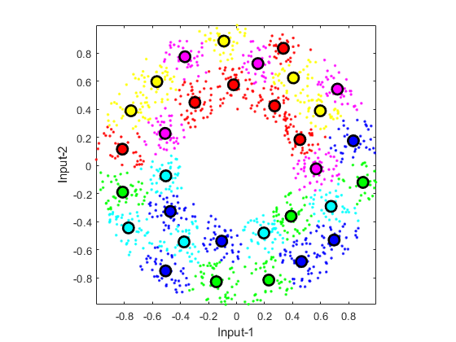

Vector Quantization
Vector quantization (VQ) can be viewed as an efficient techniques for k-means clustering, especially when the desired number of clusters is big. VQ is primarily designed for lossy data compression, particularly for image compression. A vanilla algorithm for VQ is:
- Set the number of clusters n = 1.
- Run k-means clustering with the number of clusters equal to n.
- If n is equal to or greater than the desired number of clusters, stop.
- Split each of the cluster centers into two by adding and subtracting a small random vector. Now n is twice the original value.
- Go back to the second step.
Contents
A basic example
The following example demonstrates the dendrogram after agglomerative hierarchical clustering.
DS=dcData(2); data=DS.input; codeBookSize=2^5; codebook=vecQuantize(data, codeBookSize);
No. of centers = 2, loop count = 16, distortion = 407.897 No. of centers = 4, loop count = 6, distortion = 160.922 No. of centers = 8, loop count = 12, distortion = 67.0511 No. of centers = 16, loop count = 31, distortion = 36.0574 No. of centers = 32, loop count = 15, distortion = 16.088
Visualization of the clustering process
If you want to see the animation of the clustering process, try the next example:
DS=dcData(2); data=DS.input; codeBookSize=2^5; codebook=vecQuantize(data, codeBookSize, 1);
Iteration count = 1/200, distortion = 709.554919 Iteration count = 2/200, distortion = 432.767037 Iteration count = 3/200, distortion = 432.462022 Iteration count = 4/200, distortion = 432.085317 Iteration count = 5/200, distortion = 431.897466 Iteration count = 6/200, distortion = 431.854233 Iteration count = 7/200, distortion = 431.740680 Iteration count = 8/200, distortion = 431.682380 Iteration count = 9/200, distortion = 431.552968 Iteration count = 10/200, distortion = 431.292486 Iteration count = 11/200, distortion = 430.966049 Iteration count = 12/200, distortion = 430.554247 Iteration count = 13/200, distortion = 430.407797 Iteration count = 14/200, distortion = 430.328689 Iteration count = 15/200, distortion = 430.268984 Iteration count = 16/200, distortion = 430.214392 Iteration count = 17/200, distortion = 430.194619 Iteration count = 18/200, distortion = 430.178359 Iteration count = 19/200, distortion = 430.129383 Iteration count = 20/200, distortion = 430.017025 Iteration count = 21/200, distortion = 429.862273 Iteration count = 22/200, distortion = 429.499843 Iteration count = 23/200, distortion = 429.067994 Iteration count = 24/200, distortion = 428.813811 Iteration count = 25/200, distortion = 428.627280 Iteration count = 26/200, distortion = 428.310804 Iteration count = 27/200, distortion = 428.095950 Iteration count = 28/200, distortion = 427.997947 Iteration count = 29/200, distortion = 427.985912 Iteration count = 30/200, distortion = 427.985912 No. of centers = 2, loop count = 30, distortion = 427.986 Iteration count = 1/200, distortion = 427.985912 Iteration count = 2/200, distortion = 175.232578 Iteration count = 3/200, distortion = 156.907438 Iteration count = 4/200, distortion = 156.451060 Iteration count = 5/200, distortion = 156.284927 Iteration count = 6/200, distortion = 156.232611 Iteration count = 7/200, distortion = 156.207835 Iteration count = 8/200, distortion = 156.184503 Iteration count = 9/200, distortion = 156.180591 Iteration count = 10/200, distortion = 156.180591 No. of centers = 4, loop count = 10, distortion = 156.181 Iteration count = 1/200, distortion = 156.180591 Iteration count = 2/200, distortion = 91.181954 Iteration count = 3/200, distortion = 87.821803 Iteration count = 4/200, distortion = 87.333012 Iteration count = 5/200, distortion = 86.935040 Iteration count = 6/200, distortion = 86.322280 Iteration count = 7/200, distortion = 84.871899 Iteration count = 8/200, distortion = 81.939827 Iteration count = 9/200, distortion = 76.110455 Iteration count = 10/200, distortion = 71.484428 Iteration count = 11/200, distortion = 70.261886 Iteration count = 12/200, distortion = 69.499763 Iteration count = 13/200, distortion = 69.136414 Iteration count = 14/200, distortion = 69.019817 Iteration count = 15/200, distortion = 68.993239 Iteration count = 16/200, distortion = 68.965434 Iteration count = 17/200, distortion = 68.911192 Iteration count = 18/200, distortion = 68.846479 Iteration count = 19/200, distortion = 68.829747 Iteration count = 20/200, distortion = 68.816255 Iteration count = 21/200, distortion = 68.809437 Iteration count = 22/200, distortion = 68.800235 Iteration count = 23/200, distortion = 68.793997 Iteration count = 24/200, distortion = 68.792972 Iteration count = 25/200, distortion = 68.792972 No. of centers = 8, loop count = 25, distortion = 68.793 Iteration count = 1/200, distortion = 68.792972 Iteration count = 2/200, distortion = 40.545621 Iteration count = 3/200, distortion = 38.711683 Iteration count = 4/200, distortion = 37.757710 Iteration count = 5/200, distortion = 37.414476 Iteration count = 6/200, distortion = 37.189627 Iteration count = 7/200, distortion = 37.108373 Iteration count = 8/200, distortion = 37.039247 Iteration count = 9/200, distortion = 36.911011 Iteration count = 10/200, distortion = 36.826834 Iteration count = 11/200, distortion = 36.770711 Iteration count = 12/200, distortion = 36.714395 Iteration count = 13/200, distortion = 36.687621 Iteration count = 14/200, distortion = 36.648102 Iteration count = 15/200, distortion = 36.619908 Iteration count = 16/200, distortion = 36.474491 Iteration count = 17/200, distortion = 36.031820 Iteration count = 18/200, distortion = 35.643364 Iteration count = 19/200, distortion = 35.557050 Iteration count = 20/200, distortion = 35.521569 Iteration count = 21/200, distortion = 35.501638 Iteration count = 22/200, distortion = 35.485331 Iteration count = 23/200, distortion = 35.476925 Iteration count = 24/200, distortion = 35.464587 Iteration count = 25/200, distortion = 35.448029 Iteration count = 26/200, distortion = 35.434259 Iteration count = 27/200, distortion = 35.416230 Iteration count = 28/200, distortion = 35.408752 Iteration count = 29/200, distortion = 35.384976 Iteration count = 30/200, distortion = 35.336885 Iteration count = 31/200, distortion = 35.315042 Iteration count = 32/200, distortion = 35.284398 Iteration count = 33/200, distortion = 35.238404 Iteration count = 34/200, distortion = 35.229511 Iteration count = 35/200, distortion = 35.224826 Iteration count = 36/200, distortion = 35.223371 Iteration count = 37/200, distortion = 35.221986 Iteration count = 38/200, distortion = 35.221986 No. of centers = 16, loop count = 38, distortion = 35.222 Iteration count = 1/200, distortion = 35.221986 Iteration count = 2/200, distortion = 18.694715 Iteration count = 3/200, distortion = 17.282179 Iteration count = 4/200, distortion = 16.840612 Iteration count = 5/200, distortion = 16.648597 Iteration count = 6/200, distortion = 16.565790 Iteration count = 7/200, distortion = 16.516085 Iteration count = 8/200, distortion = 16.477644 Iteration count = 9/200, distortion = 16.446904 Iteration count = 10/200, distortion = 16.432885 Iteration count = 11/200, distortion = 16.426762 Iteration count = 12/200, distortion = 16.415453 Iteration count = 13/200, distortion = 16.398332 Iteration count = 14/200, distortion = 16.388669 Iteration count = 15/200, distortion = 16.382768 Iteration count = 16/200, distortion = 16.380697 Iteration count = 17/200, distortion = 16.379162 Iteration count = 18/200, distortion = 16.378322 Iteration count = 19/200, distortion = 16.378322 No. of centers = 32, loop count = 19, distortion = 16.3783
Reference
Y. Linde, A. Buzo, and R.M. Gray, "An Algorithm for Vector Quantizer Design", IEEE Transactions on Communications, vol. 28, pp. 84-94, 1980.
Copyright 2011-2016 Jyh-Shing Roger Jang.